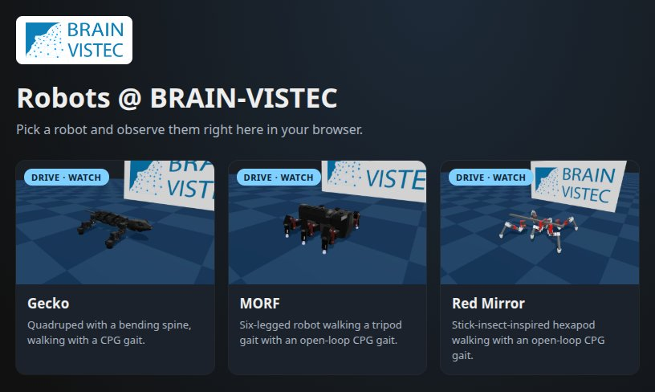
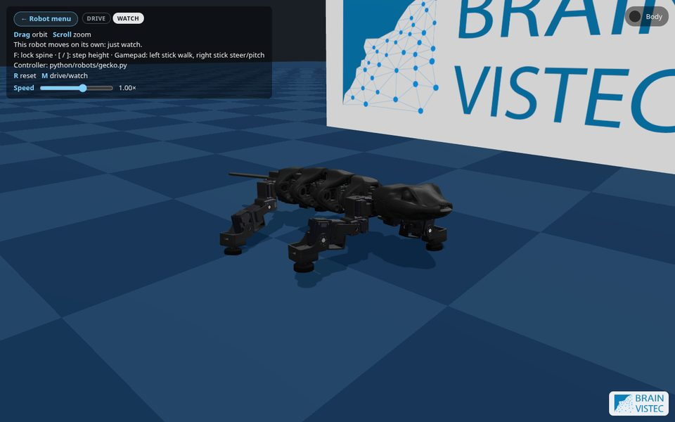
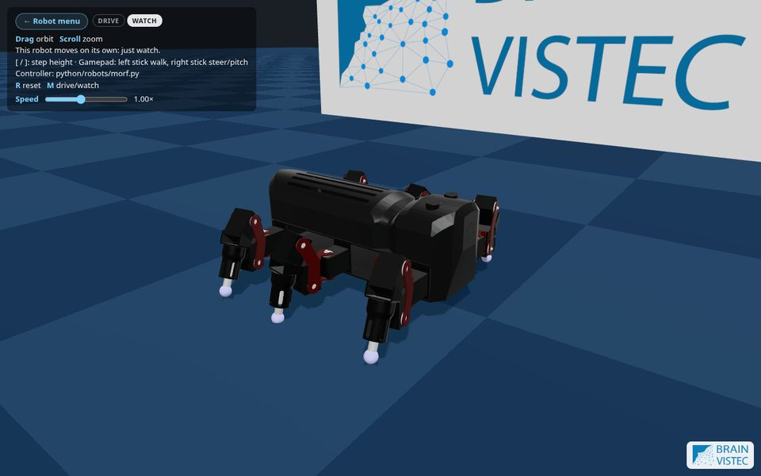
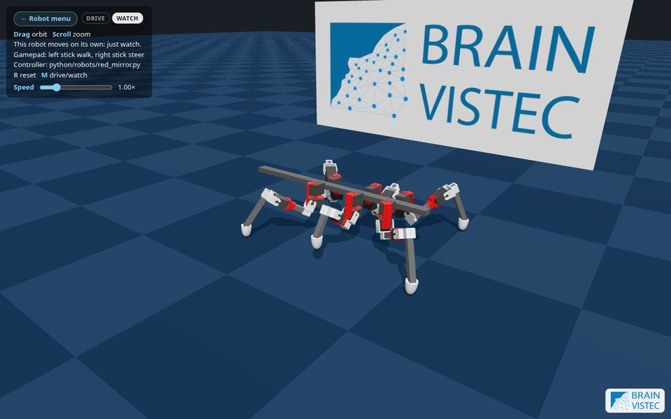

MuJoCo Web Simulator · Tutorial
From a robot description to a walking robot in the browser: one MJCF model plus one Python file.
Agenda
What a physics engine does and how MuJoCo steps a robot.
URDF, MJCF, USD: how a robot is written down for a simulator.
MuJoCo in JavaScript, controllers in Python, and the bridge between them.
The six-step workflow, hands-on. The main part of today.
Where we are

Quadruped with a bending spine. From an Isaac Sim USD.

Hexapod, tripod gait. From a CoppeliaSim scene.

Stick-insect hexapod. From a CoppeliaSim scene.
Plus the Unitree B1 (from URDF), hidden while its controller is in progress. Each opens at ?robot=<name>.
Part 1
A physics engine turns a model and some motor commands into motion, one small time step at a time.
Robot simulation
Masses and inertias decide how the robot reacts to forces. Wrong masses = a robot that sags or explodes.
Collision shapes touching the floor produce the friction that makes walking possible.
Motors turn commands into joint torques. Here, mostly position servos.
Robot simulation
MjModel: what the robot isCompiled from the XML. Bodies, joints, geoms, masses, actuators. Does not change while running.
MjData: what the robot is doingqpos, qvel, ctrl, sensordata, time. Changes every step.
mj_step: advance timeAdvances MjData by one timestep, reading ctrl for the actuator commands.
A servo: torque = kp·(target − q) − kv·q̇. We write the target into ctrl; MuJoCo computes the torque.
Robot simulation
The page steps physics at the model's fixed timestep to keep up with real time. The controller runs at its own rate, in simulated time.
timestep (e.g. 2 ms, 500 Hz)1 / rate (default 50 Hz)ctrl keeps its last value// every animation frame while (simTime < realTime) { if (controlTickDue) data.ctrl = controller(obs) mj_step(model, data) } render(data)
Part 2
Before you can simulate a robot, you write down its parts, how they connect and how they move.
Robot description
| Format | Comes from | In this repo |
|---|---|---|
CoppeliaSim .ttt | CoppeliaSim scenes | export_urdf.sh → URDF → urdf_to_mjcf.py (MORF, Red Mirror) |
| URDF | ROS, CAD exporters, vendors | urdf_to_mjcf.py, or b1_to_mjcf.py (Unitree B1) |
| USD | NVIDIA Isaac Sim | usd_to_mjcf.py (Gecko) |
| MJCF | MuJoCo, MuJoCo Menagerie | Copy it in directly |
All describe the same things: a tree of rigid links joined by joints, each link with mass, shapes to draw and shapes to collide. MJCF also describes actuators, sensors and the world.
Robot description
<mujoco model="hexbot"> <option integrator="implicitfast"/> <asset> meshes, materials </asset> <worldbody> <geom name="floor" type="plane" size="0 0 0.05"/> <body name="robot_base"> <freejoint/> <inertial mass="1.965" diaginertia="…"/> <geom type="box" group="3"/> <body name="coxa0" pos="…"> <joint name="TC0" range="-1.57 1.57"/> …child bodies: femur, tibia, foot </body> </body> </worldbody> <actuator> <position name="TC0" joint="TC0" kp="10" kv="0.5"/> </actuator> </mujoco>
A rigid link. Nesting = the kinematic tree.
How a body moves relative to its parent. freejoint lets the base fly free.
A shape: drawn, collided, or both.
A motor on a joint. Its name is what your controller commands.
Robot description
Detailed meshes from CAD. contype="0" conaffinity="0": never collide. density="0": add no mass.
Simple boxes, capsules, spheres. Fast and stable contacts. The web page hides group 3 when a model has visual geoms.
Shell parts sharing the printed material get the page's Body colour picker.
Rule of thumb: pretty meshes to look at, primitives to touch the floor. Heavy robots (like the B1) walk much better on primitive collision shapes.
Part 3
A static website. Physics in JavaScript, controllers in Python, no server.
Repo architecture
@mujoco/mujoco, DeepMind's official WebAssembly build, called from JavaScript.
Copies each geom's pose onto a mesh every frame.
CPython compiled to WebAssembly. Loaded (~10 MB) only when a robot is opened.
Dev server and bundler. No UI framework. Push to main deploys to GitHub Pages.
No backend: the site is static files. And the same controller runs on the desktop with native mujoco for debugging.
Repo architecture
index.html, src/ the web page (JavaScript) main.js start-up + frame loop simulation.js load MJCF, step MuJoCo + controller robots/python.js Pyodide + the JS↔Python bridge render/ Three.js drawing hud.js, input.js, … UI, keyboard / gamepad / touch python/ robots/<name>.py one controller per robot robots/_template.py start here simbot.py controller API, shared web + desktop run_local.py desktop runner (native MuJoCo) test_robots.py smoke test for every robot public/assets/<name>/ MJCF + meshes, served as-is tools/ converters: CoppeliaSim, URDF, USD, meshes docs/ tutorials and references
public/assets/<name>/
andpython/robots/<name>.py
Everything in src/ is generic. Adding a robot needs no JavaScript.
Repo architecture · JS ↔ Python
JavaScript · MuJoCo WASM
layout, once
numbers, per tick
ctrl list
Python · Pyodide
Repo architecture · JS ↔ Python
JS sees a tick is due in simulated time and calls Runner.step_js(...) with typed arrays viewing MuJoCo's memory.
Python builds an Observation by name: qpos[qposadr] → obs.qpos["TC0"]; free joint → obs.base_pos.
Your Controller.step(obs) returns {actuator name: target}. Missing names keep their value; unknown names raise.
JS copies the list into data.ctrl; the next mj_step applies it.
JS resets MjData (to the first keyframe if any) and calls Runner.reset_js → your reset().
A Python exception shows a red traceback box. Physics keeps running with the last controls.
Repo architecture · JS ↔ Python
| Browser | Desktop · run_local.py | |
|---|---|---|
| Physics | MuJoCo WASM, from JavaScript | native mujoco package, from Python |
| Layout built by | modelLayout() in python.js | native_layout() in simbot.py |
| Calls the controller | Runner.step_js | Runner.step directly |
| Applies the result | data.ctrl.set(...) in JS | data.ctrl[:] = ... in Python |
A controller sees only names and floats, never MuJoCo objects.
No mj_forward, no contacts or data.xpos. Need more? Add a <sensor>.
Standard library + Pyodide packages (numpy, scipy). No files, network or threads.
Part 4
Six steps. Our example robot is hexbot: the file name becomes the URL, ?robot=hexbot.
Adding a robot
The MJCF model, plus its meshes. Served as a static file.
step(obs) returns {actuator name: target}.
Vite finds the .py at build time and reads its card settings from the text.
Adding a robot
.tttStep 1
# A2 export the model root to URDF (headless) tools/coppeliasim/export_urdf.sh HexBot.ttt /hexbot_body # A3 check joints and axes in the browser viewer python tools/coppeliasim/urdf_viewer/server.py # A4 extract the scene's Lua controller tools/coppeliasim/extract_scripts.sh HexBot.ttt # A5 URDF -> MJCF + STL meshes python tools/coppeliasim/urdf_to_mjcf.py \ assets_src/HexBot/urdf/HexBot.urdf
Same urdf_to_mjcf.py. Resolve package:// and xacro first.
E.g. MuJoCo Menagerie: copy it in, check floor and actuators.
Free joint, a position actuator per joint (kp=10), floor, lights, placeholder masses.
Step 2
A converted model loads but rarely behaves. Copy it to public/assets/hexbot/, then check:
contype="0" conaffinity="0" from foot geoms.group="3" so the page shows meshes, not boxes.kp for heavy robots, cap with forcerange.material="printed".<mujoco model="hexbot">.tools/stl_to_msh.py. Aim under ~5 MB.python -c "import mujoco; m = mujoco.MjModel.from_xml_path('public/assets/hexbot/hexbot.xml'); print(m.body_mass.sum())"
Step 3
$ cp python/robots/_template.py python/robots/hexbot.py
MODEL = "assets/hexbot/hexbot.xml" # relative to public/ HIDDEN = True # out of the menu for now class Controller: rate = 50 def step(self, obs): return {} # no commands: hold every joint at 0
$ python python/run_local.py hexbot
Drops onto the floor and stands (or folds up) without jitter, drift or flying away.
Nan, Inf or huge value in QACC: check masses and inertias, then kp/kv on light links, then timestep="0.001".
Print m.actuator(i).name and m.joint(i).name: your controller's vocabulary.
Step 4
import math MODEL = "assets/hexbot/hexbot.xml" USER_CONTROL = True # keyboard / gamepad / touch WATCH_INPUT = {"left_y": 1.0} # Watch mode walks forward STAND = {"CF0": -0.5, "FT0": 1.7} # one entry per actuator class Controller: rate = 50 # control ticks per simulated second def reset(self): # at start and on R self.phase = 0.0 def step(self, obs): self.phase += 2*math.pi / self.rate * obs.joy.left_y * obs.speed targets = dict(STAND) targets["TC0"] = 0.3 * math.sin(self.phase) return targets
obs: joystick, joint positions and velocities, sensors, base pose.
{actuator name: target}. Left-out actuators keep their value.
In __init__(self, robot), check your names against robot.actuators.
Step 4 · Controller API
obs gives you| Field | Meaning |
|---|---|
obs.joy.left_y | forward / back: W/S, Up/Down, gamepad left stick (−1..1) |
obs.joy.right_x, right_y | steer: A/D, Left/Right · up/down: Q/E |
obs.joy.keys, toggled | held keys ("Space", "KeyJ") · toggle keys switched on |
obs.qpos, obs.qvel | {joint name: position / velocity} |
obs.sensors | {sensor name: value}, float or tuple |
obs.base_pos, base_quat, base_vel | root body pose (w, x, y, z) and velocity, if it has a free joint |
obs.time, obs.speed, obs.watching | sim seconds · speed multiplier · True in Watch mode |
Full reference: python/README.md. Shared helpers go in python/robots/_<name>.py, e.g. _heading.HeadingHold.
Step 4 · Porting
Lua · sysCall_actuation
function sysCall_actuation() o2 = math.cos(count)*0.4 count = count + 0.05 sim.setJointTargetPosition( L1_joints[1], o2-0.8) -- /TL0 end
Python · step(obs)
class Controller: rate = 20 # 1 / 0.05 s def step(self, obs): o2 = math.cos(self.count)*0.4 self.count += 0.05 * obs.joy.left_y return {"TL0": o2 - 0.8}
/TL0 is joint TL0 and actuator TL0.
CoppeliaSim steps at 50 ms → rate = 20.
Scale phase by left_y, steer with right_x, ramp in.
Step 5
TITLE = "HexBot" DESCRIPTION = "Six-legged tripod walker." THUMBNAIL = "assets/thumbs/hexbot.jpg" USER_CONTROL = True
Plain one-line literals: the menu reads them from the file text, before Python starts.
Thumbnail: frame the robot in the page, screenshot, save an ~800×500 JPEG in public/assets/thumbs/.
Optional: CAMERA, HELP, BUTTONS, SPEED_RANGE, DRIVE_SPEED, VISUALS, BODY_COLOR.
Step 6
# desktop: viewer, headless, watch mode python python/run_local.py hexbot python python/run_local.py hexbot --headless \ --seconds 10 --joy left_y=1 python python/run_local.py hexbot --watch --speed 2 # every robot loads and stays stable python python/test_robots.py # browser, reloads when you save the .py npm run dev # localhost:5173/?robot=hexbot
Errors: red traceback box. print(): browser console (F12). Phone: add ?touch.
public/assets/hexbot/, the thumbnail, python/robots/hexbot.py.
Push to main → GitHub Pages deploys it.
Troubleshooting
| Symptom | Likely cause and fix |
|---|---|
| Explodes at t ≈ 0 | Bad mass or inertia, or starts inside the floor |
| Sags, can't stand | Actuators too weak: raise kp, check forcerange |
| Legs pass through floor | Foot geoms have contype="0" conaffinity="0" |
| Legs jitter | kv too high on light links; keep implicitfast, lower the timestep |
| Walks in circles | Open-loop drift: use HeadingHold, check gait symmetry |
| Wrong gait speed vs CoppeliaSim | rate doesn't match the 50 ms step (use 20) |
| Boxes over the meshes | Collision geoms not in group="3" |
| Missing from the menu | HIDDEN = True, name starts with _, or MODEL path wrong |
Recap
public/assets/, Python in python/robots/. No JavaScript.docs/adding-a-robot.md
python/README.md
docs/python-js-bridge.md
docs/model-tools.md
Next up for the repo: sensor feedback (IMU, foot contact) and ONNX policy controllers.